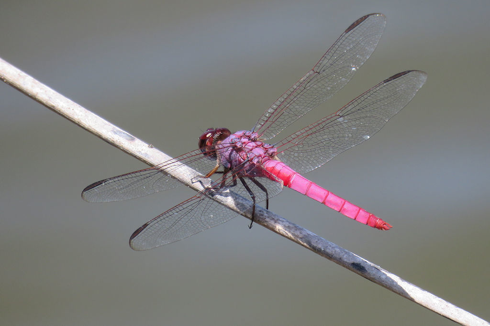

- A dragonfly with a vivid rose-pink to purple body cruising the pond edge is a male roseate skimmer — one of the few truly pink dragonflies you will see.
- The color belongs to mature males. Females and young males are a more modest brown, so the showy pink is a male's badge.
- It is a creature of warm, often disturbed water, and is common around ponds, ditches, and canals across the southern states.
- Like every dragonfly, it is a superb flier and hunter, catching small insects in mid-air with a basket formed by its legs.
Mature males are rose-pink to red-violet; females and young are brown and tan.
Mostly clear, sometimes with a faint amber tint at the base.
Slender, typical skimmer shape.
Perches on low stems and patrols low over the water.
Silent.
A medium dragonfly with a rose-pink or purplish body working a pond edge — the pink is unmistakable on a male. Brown individuals with the same shape and habits are females or young males.
Small flying insects caught in flight; aquatic young prey on mosquito larvae and other small water creatures.
Around the ponds and any ditches or basins, perched on low stems or patrolling the shoreline on warm days. Watch for the pink.
A warm-season flier, common from spring through fall.
Just watch and enjoy. No need to catch or handle them — dragonflies are best seen in flight.
- © William Hull (CC-BY-NC), via iNaturalist